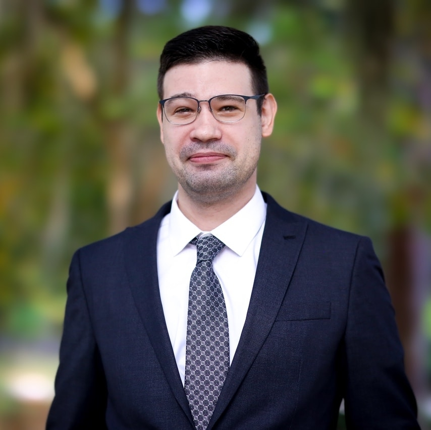

Vasily (Vas) S. Levin, Esq.

LL.M. in Taxation, UF Levin College of Law (May 2026) • UF Law Tax Program Scholarship
J.D., UF Levin College of Law (May 2025) • Governor's Scholarship (full tuition, merit)
American College of Bankruptcy Scholar • Dean's Leadership Award • Courage and Commitment Award
CALI Book Award, Mental Health Law • Journal of Technology Law and Policy, Executive Research Editor
Disability Law Association, President • Health Law Association, Founding Member
Background
I am Vas, originally from Russia, with Ukrainian, Jewish, Mongolian, Finnish, and Polish heritage, and have lived in many countries before settling in the United States. I moved from North Dakota to Gainesville in 2021 to start law school at UF. In my third week of 1L, I suffered a severe ischemic stroke with a less than 5% survival prognosis. I survived, and had to relearn how to eat, drink, walk, speak, and type. I left at the end of 2021 and came back in 2022, graduating on time with my class while continuing daily recovery.
At UF Law I was an Ambassador, Executive Research Editor for the Journal of Technology Law and Policy, President of the Disability Law Association, Research Assistant for Dean Emeritus Jon Mills at the Center for Governmental Responsibility and for Prof. Derek Bambauer, and a Themis Bar Review Representative. My judicial experience includes internships with Hon. William Matthewman (U.S. District Court, S.D. Fla.) and Hon. Peter D. Russin (U.S. Bankruptcy Court, S.D. Fla.), the U.S. Trustee Program, the Florida Office of the Public Defender, and the Florida Office of the Attorney General. I attended the Judicial Intern Academy in the Southern District of Florida and received an American College of Bankruptcy scholarship to the National Conference of Bankruptcy Judges.
Practice Interests
Fintech Restructuring Data Privacy Crypto Commercial Litigation Cybersecurity IP AI Governance
Pro Bono
Languages
Russian (native) • Belarusian, Polish, Ukrainian (conversational with practice) • Spanish (basic reading and listening, conversational with practice) • French, Latin, German, Chinese, Japanese (basic, conversational with practice) • Eight programming languages.
Interests
Golf, archery, kayaking, swimming, and Tai chi for mind-body performance and recovery. Guitar, piano, and singing. Wilderness exploration. IT, AI, software engineering, tinkering, and restoration. Crafts, writing guides, and teaching.
Happy to Help
Contact
vasilyslevin@gmail.com • vasilylevin@ufl.edu • (202) 838-7222 • github.com/vasilyslevin • Gainesville, FL